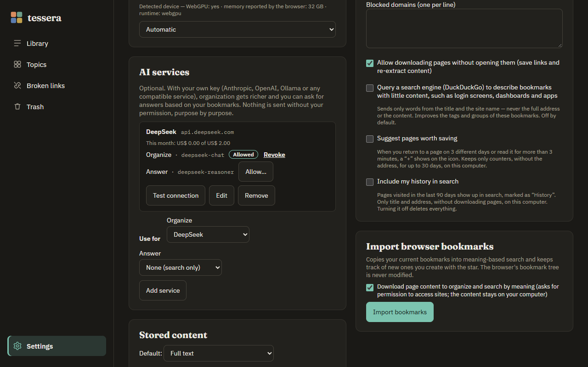
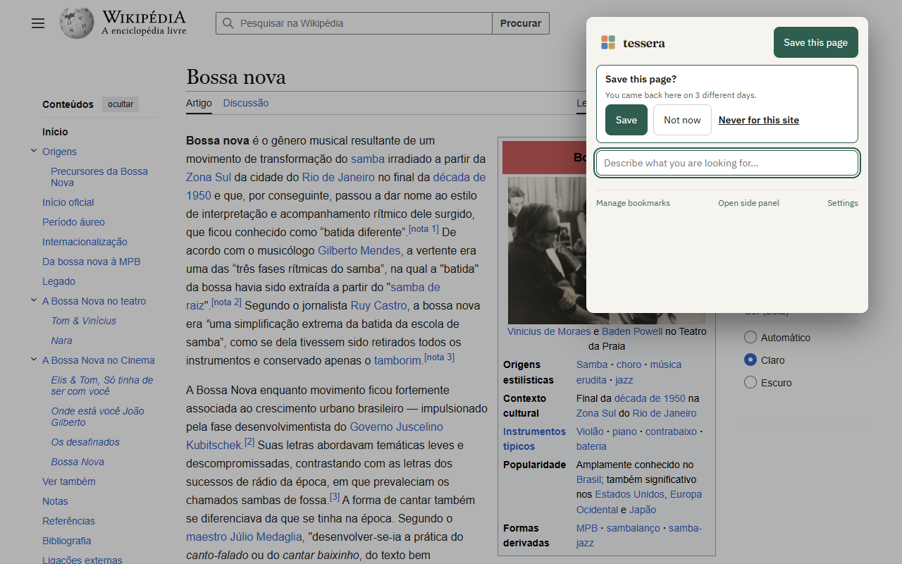

1Getting started
Tick each step as you go — progress is kept only in this browser.
2Related to the open page

Open the side panel (Tessera icon → Side panel, or the browser's side menu). Under Related to this page you see the bookmarks about the same subject as the open tab — without typing anything. Switch tabs and the list follows.
It is search by meaning working for you: while reading a service's docs, you see the guides, alternatives and tutorials you had already saved about it.
To read the open page, Tessera needs site access (Settings → Privacy → “Allow downloading pages…”). It reads only to compare with your bookmarks; nothing is sent.
3Search by describing

Type it the way you remember it: “that cheese bread recipe”, “how to publish a site without a server”, “short home workout”. Results come by meaning, with the matching excerpt highlighted.
| Where | How |
|---|---|
| Popup | click the icon or Alt+Shift+F; ↑ ↓ and Enter to open (Alt+Enter opens a new tab) |
| Address bar | type sf, a space and your search |
| Side panel | search field at the top |
| Library | search at the top, with filters by tag, collection, site, date and topic |
4Topics

In Topics, Tessera groups your bookmarks by what they have in common. Topics emerge from your own bookmarks, with no predefined category list, and their names come from the members themselves.
- Click a topic to see its bookmarks in the side panel: Open all in tabs or View in Library.
- No topic: what doesn't fit yet. Each item shows Looks like: … when a close topic exists — one click adds it.
- New topic…: create your own topic (at the top, from a bookmark without topic, or by selecting several in the Library). It keeps the name you gave it, even when topics are recalculated.
- Similar: in each topic's panel, bookmarks from outside that resemble it, ready to add.
- Recalculate groups rebuilds topics from everything that is ready and shows the result (before → after).
5Appearances

In Settings → Appearance: Calm (space and reading), Dense (many bookmarks per screen) and Visual (tiles in the topic color and large icons), each in light, dark or following the system.
6AI with your own key (optional)

With nothing configured, Tessera already organizes and searches with local AI. For richer tags and summaries and answers based on your bookmarks, connect a service with your own key:
- Settings → AI services → Add service and pick Anthropic, OpenAI, Ollama (on your computer) or Compatible — any service in the OpenAI or Anthropic format (DeepSeek, Groq, OpenRouter, LM Studio…), entering its address.
- Paste the key and click Load models from the service: the model fields start suggesting names.
- Set the monthly limit (US$ 5 by default). If the model is not in the price table, enter its price.
- For each purpose, click Allow…: you see the exact address and what will be sent, and only then authorize. Revoke stops immediately, including queued work.
- Test connection confirms everything works.
Which model for what?
To organize, a fast and cheap model — it runs once per bookmark (e.g. DeepSeek chat, Claude Haiku, GPT-4o mini). To answer, a stronger model, since it has to combine sources and cite correctly. Tessera asks for a direct answer, without reasoning mode, so the limit isn't wasted.
Answer based on my bookmarks

Search in the Library or the popup and click Answer based on my bookmarks. The bookmarks used as sources show up right away; then the answer, with [1] citations that open the bookmark. Without enough basis, it says so instead of making things up.
What never goes to any service: banking and health sites, domains you blocked, your key (it stays on this computer) and your history.
7Suggestions and history (optional)

In Settings → Privacy:
- Suggest pages worth saving: when you return to a page on 3 different days, or read it for more than 3 minutes, a + shows on the icon. In the popup: Save, Not now (one week) or Never for this site. Tessera keeps only counters, without the address, for up to 30 days.
- Include my history in search: pages visited in the last 90 days show up in search marked as History, with Save in one click. Only title and address; turning it off deletes everything.
8Maintenance
- Broken links: checks your bookmarks and shows the reason (page gone, domain for sale…). You confirm before anything goes to the trash.
- Trash: kept for 30 days; Empty trash deletes right away.
- Export / Import (Settings → Data): everything as JSON, for backup or to move to another computer.
- Pause / resume processing anytime from the progress bar.
9Privacy in one minute
- Bookmarks, page text, organization and the AI model stay on your computer.
- No account, no server, no ads, no telemetry.
- The internet is only used to download the pages you saved, download the model once, check links when you ask and — only if you turn them on — the search engine lookup for pages without content and the AI services you configured.
10Troubleshooting
“Search by meaning unavailable”
In Settings → Local AI model, see the reason and click Try again. Without a compatible graphics card, choose the light model.
Empty related list in the side panel
Allow site access (Settings → Privacy). Internal browser pages have no related items.
Ollama doesn't connect
Start Ollama allowing extensions and use the address http://localhost:11434/v1.
macOS and Linux:
OLLAMA_ORIGINS=chrome-extension://* ollama serve
Windows (PowerShell):
$env:OLLAMA_ORIGINS="chrome-extension://*"; ollama serve
“Last failure” on the AI service
The message tells the reason (invalid key, no credit, limit, empty answer). Local organization keeps going meanwhile.
Import is taking long
Normal with hundreds of bookmarks (the AI reads each page). Pause and resume anytime; the bar shows the estimated time.
Topics out of date
Use Recalculate groups on the Topics screen — the result shows right away.
None of this helped
Open an issue at github.com/casheiro/tessera/issues with your browser, the Tessera version (in Settings) and what happened. Don't include personal data or your API key.
Shortcuts
| Shortcut | Action |
|---|---|
| Alt+Shift+S | save the current page |
| Alt+Shift+F | open the search popup |
| sf + space (address bar) | search your bookmarks |
| ↑ ↓ · Enter · Alt+Enter | navigate and open results (new tab with Alt) |